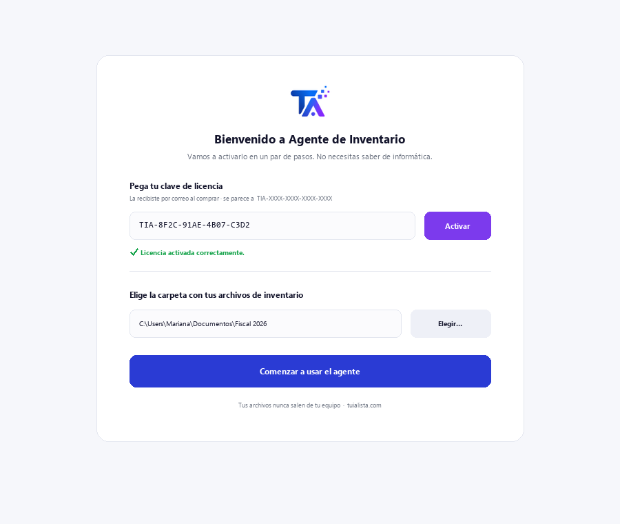
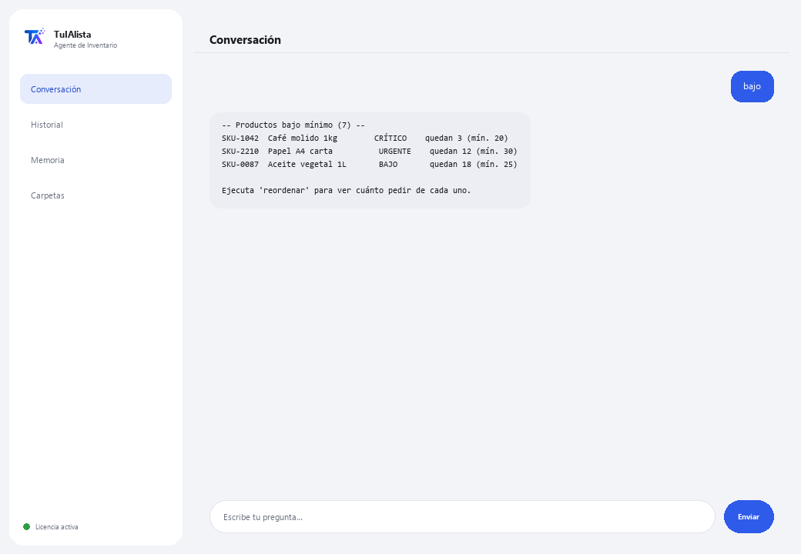

Agente de Inventario
Detecta qué reordenar, cuánto vale tu inventario y dónde tienes capital inmovilizado — en segundos.
¿Qué resuelve y qué necesitas?
Tener inventario es un equilibrio: si te falta, pierdes ventas; si te sobra, tienes dinero inmovilizado. Revisar esto a mano en hojas de Excel es tedioso y casi nadie lo hace a tiempo. Este agente convierte tus archivos de inventario en un panel de control de compras y capital.
- Necesitas: tu clave de licencia (TIA-XXXX-XXXX-XXXX-XXXX) y la carpeta con tus archivos de inventario (Excel o CSV). Nada de Python ni conocimientos técnicos.
- Primer resultado en menos de 5 minutos: instalas, activas, eliges tu carpeta y corres bajo para ver qué producto está por agotarse.
- Los datos de tu negocio nunca salen de tu computadora — el análisis corre localmente.
soporte@tuialista.com o entra a tuialista.com/soporte — normalmente respondemos el mismo día hábil.1 Qué hace este agente
Tú le señalas la carpeta con tus archivos de inventario y él:
- Los lee (Excel .xlsx y CSV), reconociendo automáticamente las columnas (en español o inglés).
- Detecta productos bajo mínimo y su urgencia.
- Sugiere cuánto reordenar de cada producto (según su rotación o un valor por defecto).
- Calcula el valor total del inventario, al costo y al precio de venta, por categoría y proveedor.
- Identifica stock muerto (sin movimiento) que inmoviliza capital.
- Clasifica productos por análisis ABC (dónde está concentrado el valor).
- Detecta exceso de inventario.
- Responde tus preguntas: “¿qué me conviene reordenar primero?”
El resultado: sabes qué comprar, qué liberar y dónde está tu dinero, en segundos.
2 Instalación (2 minutos)
Para Windows. No hace falta internet permanente ni subir nada a la nube.
Baja el instalador desde tuialista.com/descargar (agente Inventario) y ábrelo. Crea un acceso directo en tu escritorio con el logo — no requiere Python ni terminal.
Doble clic al ícono nuevo. Pega tu clave de licencia (te llegó por correo al comprar) y pulsa Activar. Verás una palomita verde cuando sea válida.
Selecciona la carpeta con tus archivos de inventario y pulsa Comenzar a usar el agente. La próxima vez arranca directo — recuerda tu clave y tu carpeta.

3 Cómo usarlo
El agente abre una ventana de chat, como una app de mensajería — no es una pantalla negra de programador. Escribes tu comando o tu pregunta en el cuadro de texto de abajo, pulsas Enviar (o Enter), y la respuesta aparece como un mensaje, igual que en esta imagen real:

Los comandos siguientes son las palabras que puedes escribir en ese mismo cuadro de texto:
> bajo [umbral]Productos con stock igual o menor a su mínimo (o al umbral que indiques), ordenados por urgencia (CRÍTICO / URGENTE / BAJO) y con días restantes estimados si hay rotación. Ej.: bajo 5.
> reordenarPara cada producto bajo, sugiere cuánto pedir (según rotación para ~30 días, o un valor por defecto) y estima el costo.
> valorValor total al costo y al precio de venta, margen potencial y desglose por categoría y proveedor.
> muerto [días]Productos con stock pero sin movimiento en los últimos N días (90 por defecto), ordenados por valor inmovilizado. Ej.: muerto 120.
> abcClasificación A/B/C (Pareto) por valor de inventario: los “A” concentran la mayor parte del valor y merecen más atención.
> excesoProductos con stock muy por encima de su mínimo y el capital atado en ese exceso.
> ¿pregunta libre?Escribe cualquier duda en lenguaje natural, ej.: ¿qué productos de la categoría bebidas están por agotarse?
> salirTermina la sesión (también funciona exit).
4 Ejemplos de uso común
La compra de la semana
bajo → reordenar — ves qué falta y cuánto pedir, con el costo estimado.
Liberar dinero atrapado
muerto 90 → exceso — detectas el capital inmovilizado en productos sin movimiento o con exceso.
Enfocar tu atención
abc — sabes qué productos “A” cuidar más porque concentran el valor.
Una consulta puntual
¿cuál es el valor total de mi inventario al costo?
5 Preguntas frecuentes
¿Mis datos se suben a internet?
¿Qué formatos acepta?
¿Necesito nombrar mis columnas de una forma exacta?
¿De verdad “predice” cuándo reordenar?
¿Necesito la columna de rotación o de última salida?
¿En qué idioma me responde?
¿Modifica mis archivos?
¿Puedo cambiar la carpeta de datos?
¿Los cálculos son exactos?
¿Puede leer varios archivos?
6 Solución de problemas
Dice “CSV/XLSX sin columnas reconocidas”
No carga un .xlsx
Dice “Licencia no válida” o pide reconectar
“No hay proveedores de IA configurados”
¿Ninguna de estas soluciones resolvió tu problema? Escríbenos directamente — con gusto lo revisamos contigo.
soporte@tuialista.com o entra a tuialista.com/soporte — normalmente respondemos el mismo día hábil.7 Privacidad y confidencialidad
Los datos de tu negocio nunca salen de tu computadora.
- El agente lee y analiza tus archivos localmente, en tu propio equipo. No los sube a ningún servidor.
- Todos los cálculos (bajo stock, valor, ABC, exceso, stock muerto) ocurren en tu máquina.
- Lo único que viaja por internet es: (1) una comprobación de que tu licencia está activa — que no incluye tus datos —, y (2) al hacer una pregunta libre, se envía un resumen del inventario relevante al motor de IA para redactar la respuesta.